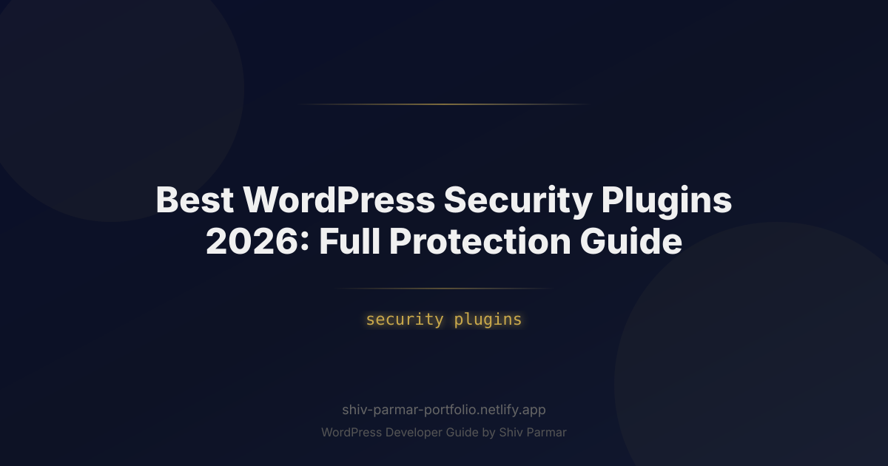

Best WordPress Security Plugins 2026: Full | Shiv Parmar
Table of Contents
WordPress continues to power more than 43% of the web, and this dominance makes it an irresistible target for malicious actors. Entering 2026, the threat ecosystem has evolved radically. Cybercriminals no longer rely on simple automated scripts testing predictable passwords; modern attacks are driven by autonomous AI-powered botnets, automated zero-day exploit engines, and sophisticated supply-chain injections capable of harvesting credentials within seconds of a vulnerability being exposed. Maintaining a secure digital presence requires proactive, multi-layered infrastructure rather than passive hope.
A single security breach can devastate your digital brand. Beyond immediate downtime, a compromised environment leads to search engine blacklisting by Google Safe Browsing, loss of organic search visibility, stolen customer payment details, and severe regulatory penalties under data privacy frameworks like GDPR and CCPA. Restoring an infected website costs thousands of dollars in forensic cleanups and lost revenue, not to mention the irreparable damage to user trust.
Deploying an enterprise-grade security stack is no longer an optional luxury for high-traffic websites—it is fundamental operational hygiene. In this exhaustive guide, we dissect the best WordPress security plugins for 2026, analyze industry benchmarks such as Wordfence, evaluate endpoint firewalls versus cloud proxies, and provide an actionable, step-by-step implementation blueprint to lock down your installation against contemporary threats.
What Are WordPress Security Plugins?
WordPress security plugins are specialized software packages that integrate directly into your CMS architecture to prevent, detect, and remediate malicious actions. While the core WordPress development team continually patches core software, the platform’s open and extensible ecosystem—consisting of over 60,000 themes and plugins—creates an expansive attack surface. Security plugins bridge the critical defensive gap between your host server and the application layer.
Modern security suites generally fall into two primary architectural categories:
- Endpoint Firewalls (Application-Level): These plugins execute directly on your hosting server alongside WordPress core files. As incoming requests hit your server, the plugin inspects execution headers, payload parameters, and database queries before initializing WordPress. Tools like Wordfence excel in this domain because they possess deep introspection into the WordPress execution runtime, recognizing authenticated user privileges and internal application logic that external proxies cannot see.
- Cloud-Based Web Application Firewalls (DNS/Proxy-Level): These solutions route your domain's traffic through a globally distributed reverse-proxy network (such as Cloudflare or Sucuri) before the traffic ever reaches your physical hosting server. Cloud firewalls filter high-volume Distributed Denial of Service (DDoS) attacks, scrub malicious bot traffic, and cache assets to reduce server load.
Beyond firewall filtering, modern security plugins serve as unified threat management platforms. They combine Web Application Firewalls (WAF), real-time file integrity monitors (FIM), automated vulnerability scanners, brute-force mitigation modules, multi-factor authentication (MFA) gateways, and operational audit logs into a single management console. By continuously comparing your filesystem against clean repository checksums, these plugins intercept exploits long before attackers can establish persistent backdoors.
Why WordPress Security Matters in 2026
The cybersecurity threat matrix targeting content management systems has shifted dramatically. In 2026, security is no longer an administrative afterthought; it directly dictates search engine rankings, operational uptime, and brand survival. Several technological and behavioral factors have converged to make site hardening mandatory.
First, the democratization of machine learning tools has empowered bad actors to weaponize autonomous vulnerability discovery. Threat actors deploy generative AI agents that continually monitor the WordPress Plugin Directory, GitHub commits, and public SVN repositories. The moment a developer pushes a code update that patches an unauthenticated SQL injection or Cross-Site Scripting (XSS) vulnerability, malicious bots reverse-engineer the commit diff, identify the vulnerability vector, and launch automated exploit sweeps across millions of websites within minutes—long before average webmasters have initiated their update cycles.
Second, supply-chain contamination has surpassed direct brute-force logins as the primary vector for unauthorized site infiltration. Cyber syndicates acquire abandoned plugins with solid install bases, push updates containing obfuscated polyglot payloads, and quietly establish remote access trojans (RATs) within thousands of web environments. Without real-time file integrity protection, these malicious updates execute seamlessly, remaining hidden within your production database.
Third, API vulnerabilities are surging. As decoupled, headless WordPress implementations leveraging the WP REST API and WPGraphQL become industry standard, traditional login-page protection is insufficient. Attackers bypass wp-login.php entirely, targeting exposed REST endpoints with high-frequency credential-stuffing attacks and object-level authorization exploits. Modern security plugins must intercept API endpoints with the same rigorous scrutiny historically reserved for human-facing entry forms.
| Plugin Name | Firewall Architecture | Malware Scanner | Server Overhead | Best Suited For |
|---|---|---|---|---|
| Wordfence Security | Endpoint (PHP/WAF) | Deep File & Signature | Moderate to High | Deep inspection, self-hosted, enterprise hardening |
| Solid Security (iThemes) | Application Layer Rules | Integrity & API-Based | Low | Site hardening, 2FA enforcement, user access control |
| Sucuri Security | Cloud Proxy (DNS) | Remote Integrity Scanner | Ultra-Low (Offloaded) | DDoS mitigation, CDN integration, offloaded processing |
| MalCare Security | Cloud / Endpoint Hybrid | Cloud-Offloaded Sync | Very Low | Shared hosting, instant automated malware cleanup |
Step-by-Step Guide: Implementing Bulletproof WordPress Protection
Implementing an ironclad defense strategy demands methodical execution. Relying on default "out-of-the-box" configurations leaves blind spots that automated exploit kits readily bypass. Follow this step-by-step implementation guide to achieve complete protection.
Step 1: Perform Pre-Deployment Auditing and Server Configuration
Before installing any security plugin, ensure your underlying hosting environment adheres to modern security standards. A plugin running on an insecure server runtime is fundamentally compromised.
- Verify you are running PHP 8.2 or PHP 8.3 with the latest security revisions. Older PHP versions have reached official End-of-Life (EOL) and contain known memory vulnerabilities.
- Ensure file permissions are strictly configured: directories must be set to
755(or750), files to644, and your sensitive configuration filewp-config.phpshould be secured at600or640. - Disable directory browsing globally across your web server.
If you are operating on an Apache or LiteSpeed server, insert the following directive into the top of your root .htaccess file to block directory indexing:
# Disable directory browsing
Options -Indexes
# Prevent access to hidden files (.env, .git, .htaccess)
<FilesMatch "^\.">
Order allow,deny
Deny from all
</FilesMatch>
For Nginx installations, place the equivalent block inside your server context within the configuration file:
# Block access to hidden files and sensitive directories
location ~ /\. {
deny all;
access_log off;
log_not_found off;
}
location ~* /(?:uploads|files)/.*\.php$ {
deny all;
}
Step 2: Deploy and Optimize Wordfence for Real-Time Endpoint Defense
Wordfence remains the gold standard for deep application-level defense due to its threat intelligence engine. However, the standard basic plugin activation only runs the firewall in "Basic WordPress Mode," meaning malicious payloads can execute before the firewall rules initialize.
To establish maximum protection, optimize the Wordfence Web Application Firewall to run in "Extended Protection Mode" via auto_prepend_file:
- Navigate to Wordfence > Firewall > Manage WAF in your WordPress dashboard.
- Click Optimize the Wordfence Firewall.
- The setup wizard will prompt you to download a backup of your
.htaccess,.user.ini, orphp.inifile, depending on your hosting server software. Download this backup immediately. - Select your matching server environment (e.g., Apache + mod_php, Nginx, or LiteSpeed).
- Click Continue. Wordfence writes a directive into your server initialization file ensuring the firewall processes requests before any core code executes.
For manual Nginx implementations where dynamic modifications are disabled, you can manually instruct your PHP fastcgi handler to prepend the firewall engine by editing your php.ini or PHP-FPM pool configuration:
; Prepend Wordfence WAF to all incoming PHP requests
auto_prepend_file = '/var/www/html/wordfence-waf.php'
This directive guarantees that even if a threat actor attempts to target a standalone PHP script dropped into an upload directory, the Wordfence engine intercepts and terminates the connection before the execution payload executes.
Step 3: Restrict Script Execution in Vulnerable Directories
The vast majority of website compromises occur because an attacker exploits an unvalidated media upload form, uploads a PHP web shell disguised as an image, and subsequently executes it from the /wp-content/uploads/ directory. WordPress core never requires PHP scripts to execute inside media directories.
Block script execution in the uploads folder permanently. Create an isolated .htaccess file inside your /wp-content/uploads/ directory with the following content:
# Block execution of all scripts in uploads folder
<Files ^(*.php|*.phps|*.phtml|*.pl|*.py|*.cgi)>
Order Deny,Allow
Deny from all
</Files>
For Nginx servers, add this location rule inside your active site block:
# Disable PHP execution inside upload directories
location ~* ^/wp-content/uploads/.*\.php$ {
deny all;
return 403;
}
Step 4: Implement Rigid Multi-Factor Authentication (MFA) and Access Hardening
Credential stuffing is automated at staggering scale. Even the most robust web application firewall cannot protect your site if an administrator’s compromised password is entered from a legitimate IP address. Implementing Mandatory Multi-Factor Authentication (MFA) eliminates 99% of unauthorized account takeovers.
Using Wordfence or Solid Security, enforce the following configuration standards:
- Mandatory 2FA for Privileged Roles: Require two-factor authentication via TOTP (Time-Based One-Time Password apps such as Google Authenticator, Authy, or 1Password) for all accounts with
Administrator,Editor, andShop Managercapabilities. Give users a strict 24-hour grace period upon first registration before access is revoked until configured. - Rate Limit Login Attempts: Configure the plugin to lock out any IP address that fails 5 consecutive authentication attempts within a 5-minute window. Lockouts should remain active for at least 24 hours.
- Immediately Ban Invalid Usernames: Automatically blacklist any IP address that attempts to authenticate using predictable administrative usernames such as
admin,administrator,root,guest, or the exact domain name of the website.
Step 5: Configure Deep File Integrity Monitoring and Automated Scans
Attackers who gain access to an under-protected environment immediately alter core files, injecting subtle PHP backdoors into wp-settings.php, index.php, or active theme files. Configuring automated integrity scanning ensures immediate notification when anomalous code manifests.
Inside your chosen security plugin’s scan settings:
- Enable scanning of WordPress core files, plugins, and active themes against the official WordPress.org repository hashes.
- Turn on scanning of files outside the WordPress installation (within the web root) to detect rogue scripts, staging remnants, or misplaced database exports.
- Configure the scanner to verify database tables for malicious JavaScript injections, base64-encoded functions, and unauthorized administrative users injected via database compromises.
- Schedule high-sensitivity scans during off-peak traffic hours (e.g., between 02:00 and 04:00 UTC) to minimize processing overhead on production workloads.
// Harden wp-config.php by disabling file editing directly from the WordPress Admin Dashboard
define( 'DISALLOW_FILE_EDIT', true );
// Prevent unauthorized plugin and theme installations without explicit FTP/SSH access
define( 'DISALLOW_FILE_MODS', true );
Adding the constants above to your wp-config.php file renders the integrated code editor completely inaccessible, meaning that even if an attacker manages to compromise an administrative session token, they cannot write malicious code directly through the dashboard interface.
Best Practices for Modern WordPress Security
While installing dedicated security plugins constitutes a foundational defense, true digital resilience requires a holistic security strategy. In 2026, web security is an active operational discipline requiring strict administrative protocols.
Adopt a Zero-Trust Administrative Architecture
Never grant full Administrator privileges when an Editor or Author role satisfies the operational requirement. Audit your user base quarterly, immediately revoking credentials for departed contractors, agencies, and former staff. Every administrative account should map strictly to an individual human identity rather than a shared generic identity (e.g., avoid shared "marketing@yourcompany.com" accounts).
Protect the REST API and Limit Endpoint Exposure
The WordPress REST API exposes public endpoints that reveal sensitive metadata, including author usernames, active user IDs, and software configurations. Attackers harvest this metadata via /wp-json/wp/v2/users to construct tailored brute-force lists.
Add this targeted code snippet to your child theme's functions.php or via a site-specific operational plugin to restrict the public REST API user endpoint to authenticated users only:
/**
* Restrict public REST API access to user endpoints for non-authenticated requests
*/
add_filter( 'rest_endpoints', function( $endpoints ) {
if ( ! is_user_logged_in() && isset( $endpoints['/wp/v2/users'] ) ) {
unset( $endpoints['/wp/v2/users'] );
}
if ( ! is_user_logged_in() && isset( $endpoints['/wp/v2/users/(?P<id>[\d]+)'] ) ) {
unset( $endpoints['/wp/v2/users/(?P<id>[\d]+)'] );
}
return $endpoints;
});
Isolate Environments and Eliminate Orphan Staging Instances
One of the most common vectors for production compromise is an abandoned staging sub-domain (e.g., staging.yourdomain.com or dev.yourdomain.com). Staging instances often share the same server root or database user privileges, are rarely updated, lack active WAF protection, and run outdated plugins. If attackers breach your forgotten staging instance, they can traverse the local filesystem directly into your production environment.
- Enforce HTTP Basic Authentication across all staging and development environments to completely hide them from search engine indexing and automated bot scanners.
- Store staging installations on isolated server containers or entirely separate physical hosting accounts with independent database credentials.
- Instantly destroy temporary staging instances the moment user acceptance testing and production deployments conclude.
Deploy Immutable, Off-Site Backups
No defensive stack is 100% impenetrable. Your ultimate contingency is an untampered, rapidly restorable backup stored outside your hosting provider's infrastructure. If a threat actor achieves root access, they will systematically delete local backup archives stored within /wp-content/backups/ or your hosting control panel.
Implement automated daily backups using specialized plugins (such as UpdraftPlus or ManageWP) or server-level cron jobs that encrypt database dumps and media archives, dispatching them over TLS to isolated, write-once cloud storage repositories like Amazon S3 with Object Lock enabled, Cloudflare R2, or Google Cloud Storage. Ensure your retention policy maintains snapshots spanning at least 90 days to guard against latent infections discovered long after execution.
Common Mistakes to Avoid
Well-intentioned site owners frequently sabotage their defensive posture by committing standard operational mistakes. Avoid these critical security anti-patterns:
Stacking Multiple Heavyweight Security Plugins
A prevalent misconception is that installing multiple security plugins multiplies protection. In reality, running Wordfence, Solid Security, and All In One WP Security simultaneously creates disastrous consequences:
- Firewall Race Conditions: Multiple endpoint firewalls hooking into the identical request lifecycle cause execution race conditions, resulting in legitimate traffic drops and 500 Internal Server Errors.
- Resource Exhaustion: Concurrent real-time file scanners will trigger CPU throttling, spike memory usage, and exceed PHP memory limits, grinding your server to a halt.
- Debugging Blindspots: When false positives block legitimate visitors or customer transactions, diagnosing which firewall layer was responsible becomes nearly impossible.
Instead, choose one primary, high-performance endpoint solution (like Wordfence) and pair it with a specialized cloud-edge CDN proxy (like Cloudflare). Keep your stack lean, coherent, and rigorously tested.
Relying Exclusively on "Security Through Obscurity"
Changing your login URL from wp-login.php to an alternate string like /my-secret-login/ provides a nominal reduction in automated script noise, but it is not a genuine security control. Attackers do not need your visual login page to breach your application. Automated bots easily discover masked login paths by intercepting redirect headers, parsing xmlrpc.php requests, or triggering unauthenticated administrative redirects. Treat obfuscation as a supplementary noise filter—never as a primary layer of protection.
Neglecting XML-RPC and Legacy Interface Vectors
WordPress includes xmlrpc.php by default to support legacy third-party publishing applications. However, this endpoint allows attackers to run the system.multicall method, executing hundreds of password guesses within a single HTTP request, completely bypassing basic login rate limiters.
Unless you actively use mobile publishing applications or specific legacy integrations, disable XML-RPC entirely. Add this directive to your primary .htaccess file:
# Block all XML-RPC request traffic
<Files xmlrpc.php>
Order Deny,Allow
Deny from all
</Files>
Ignoring Notification Alerts and Alert Fatigue
Security plugins are only as effective as the human oversight monitoring their alerts. Installing a security suite, configuring high-sensitivity alerting, and routing thousands of low-level diagnostic notifications to an unmonitored inbox defeats the purpose of threat intelligence. When a critical zero-day exploit alert triggers, it becomes buried beneath a mountain of benign event notifications.
Take the time to fine-tune your security plugin's notification thresholds:
- Disable routine alerts for successful administrator logins, blocked bot scans, and standard user password resets.
- Escalate high-severity alerts—such as modified core files, unexpected administrator creation, or file uploads with executable extensions—directly to a high-priority communication channel like a dedicated Slack security webhook, PagerDuty, or an monitored administrative SMS gateway.
Failing to Test Restoration Workflows
An untested backup strategy is an illusion. Hundreds of organizations discover during an active ransomware or malware crisis that their scheduled backup archives were corrupted, incomplete, missing dynamic database tables, or impossible to decrypt. Schedule bi-annual disaster recovery simulations where you restore your site from cold storage onto an isolated test environment. Verify data integrity, test checkout flows, and document precise Time-to-Recovery (TTR) metrics to ensure that if catastrophic failure strikes, you can restore production operations with confidence.
Conclusion
Securing your website in 2026 requires far more than just strong passwords; it demands a proactive, layered defense strategy. Leveraging reliable security plugins is the foundational step in shielding your digital presence from increasingly sophisticated malware, brute-force attacks, and emerging zero-day vulnerabilities. Whether you rely on the industry-standard firewall and deep scanning capabilities of Wordfence or prefer an alternative all-in-one suite, establishing robust protection ensures your business, user data, and brand reputation remain safeguarded around the clock.
However, automated tools can only take your defenses so far. Optimal security also involves routine site audits, proper server-level configurations, disciplined update schedules, and performance-minded implementation so your defensive layers don't slow down your user experience. Taking the time to properly configure your security plugins today will prevent costly downtime, data loss, and recovery headaches tomorrow.
If you need expert assistance hardening your site, configuring complex firewalls, or building a high-performing, secure digital platform from the ground up, professional support can make all the difference. Shiv Parmar is available for freelance WordPress development and security consulting work worldwide. Get in touch today to ensure your website benefits from industry-leading protection and custom-tailored development solutions built to scale.
Frequently Asked Questions
What is the difference between an endpoint firewall and a cloud-based WAF?
Endpoint firewalls, such as Wordfence, run directly on your hosting server alongside WordPress core, inspecting request headers, payload parameters, and database queries before WordPress initializes. Cloud-based WAFs like Sucuri route your domain's traffic through a globally distributed reverse-proxy network before it reaches your server, filtering DDoS attacks and scrubbing malicious bot traffic. Endpoint tools see authenticated user privileges and internal application logic, while cloud proxies offload processing for ultra-low server overhead.
How do I enable Wordfence Extended Protection Mode?
The default Basic WordPress Mode lets malicious payloads execute before firewall rules initialize. In your dashboard, go to Wordfence > Firewall > Manage WAF, click Optimize the Wordfence Firewall, download the backup of your .htaccess, .user.ini, or php.ini file, select your server environment such as Apache, Nginx, or LiteSpeed, and click Continue. Wordfence then writes an auto_prepend_file directive so requests are filtered before any core code executes.
How do I block PHP script execution in the WordPress uploads directory?
Most compromises begin when an attacker uploads a PHP web shell disguised as an image and runs it from /wp-content/uploads/, where WordPress core never requires script execution. On Apache, place an .htaccess file in that directory denying *.php, *.phps, *.phtml, *.pl, *.py, and *.cgi. On Nginx, add a location rule matching any .php request under /wp-content/uploads/ that returns a 403 response for every such file.
Should I install multiple security plugins for better protection?
No. Running Wordfence, Solid Security, and All In One WP Security together creates firewall race conditions on the identical request lifecycle, dropping legitimate traffic and producing 500 Internal Server Errors. Concurrent real-time file scanners trigger CPU throttling, memory spikes, and PHP memory limit exhaustion, and when false positives block real visitors you cannot tell which firewall layer caused them. Choose one primary endpoint solution like Wordfence and pair it with a cloud-edge CDN proxy like Cloudflare.
How do I limit exposure of the WordPress REST API user endpoint?
The public REST API exposes author usernames, user IDs, and software configurations through /wp-json/wp/v2/users, which attackers harvest to build brute-force lists. Add a rest_endpoints filter in your child theme's functions.php or a site-specific plugin that removes the /wp/v2/users endpoint and its single-user variant for any request where the visitor is not logged in. Authenticated users keep full access while anonymous traffic can no longer enumerate accounts.